| low | medium | high | |
|---|---|---|---|
| coast | — | — | 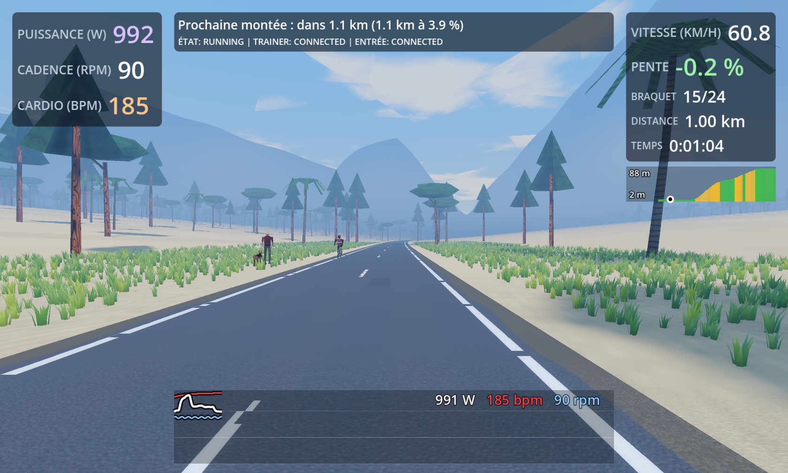 |
| coast__mediterranean | — | — | 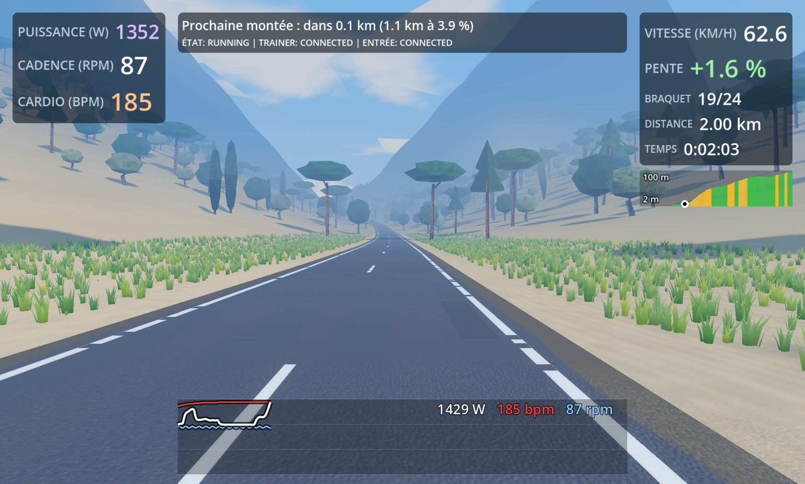 |
| mediterranean | — | — | 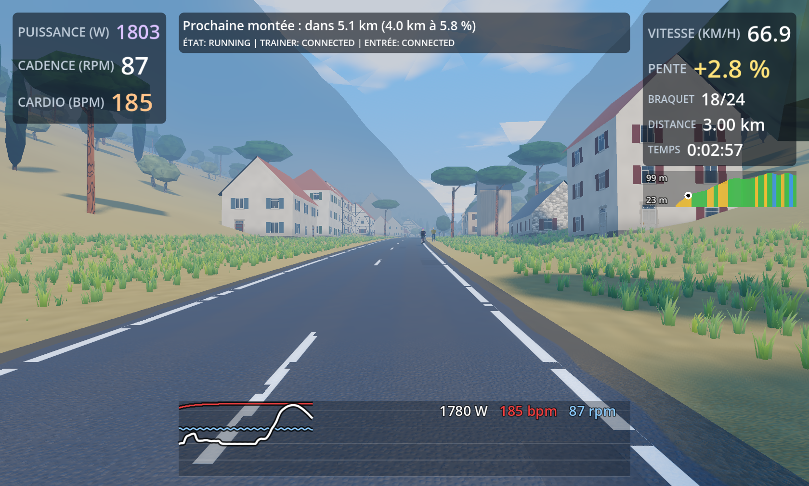 |
| mediterranean__temperate_grassland | — | — | 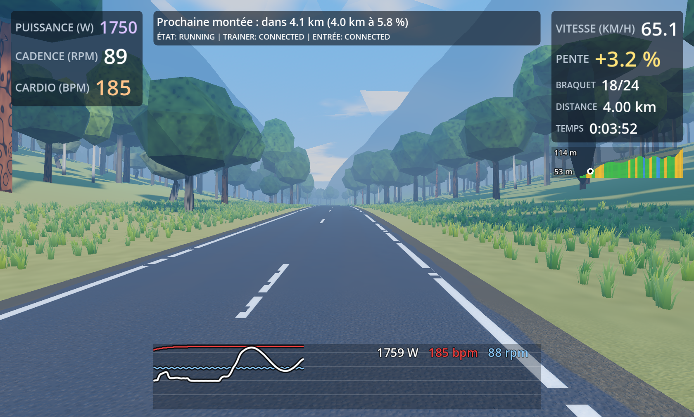 |
| temperate_grassland | — | — | 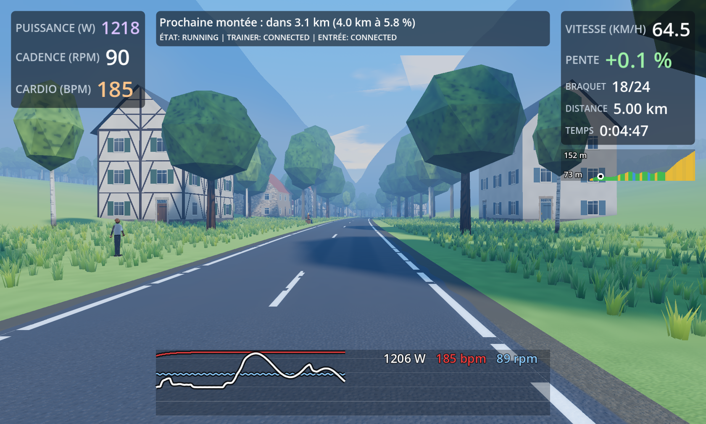 |
| temperate_grassland__farmland | — | — | 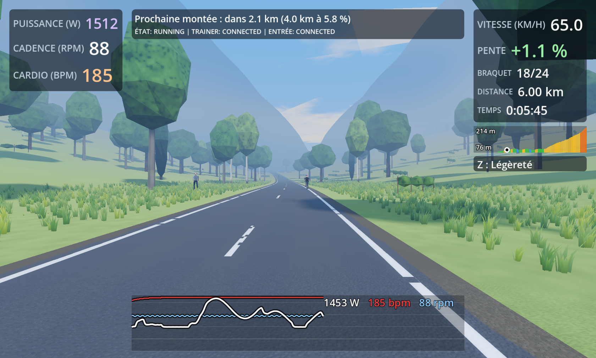 |
| farmland | — | — | 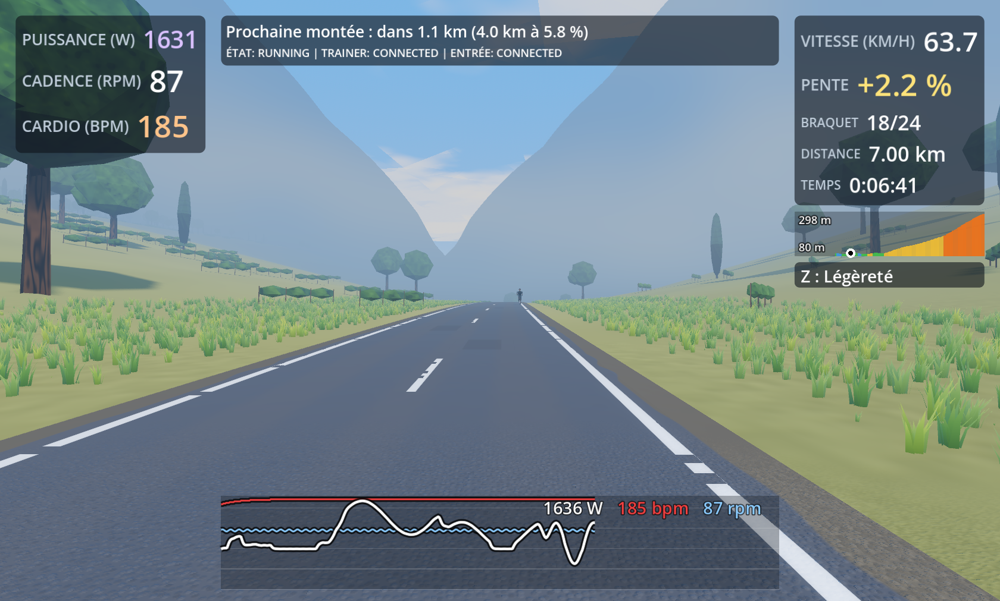 |
| farmland__temperate_forest | — | — | 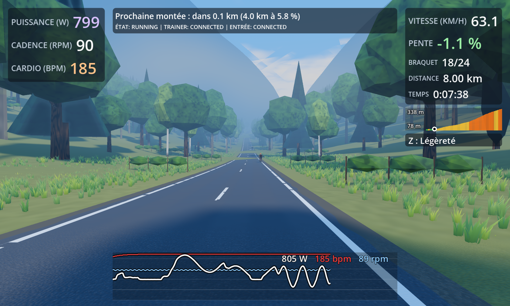 |
| temperate_forest | — | — | 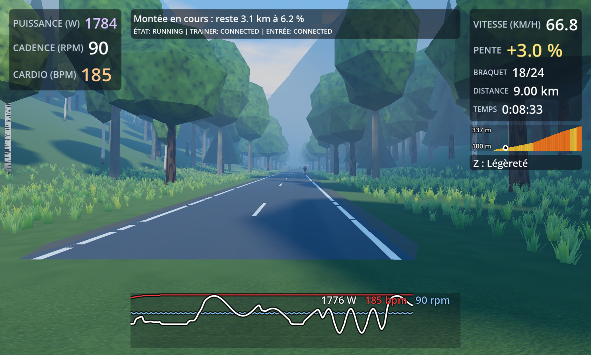 |
| temperate_forest__alpine | — | — | 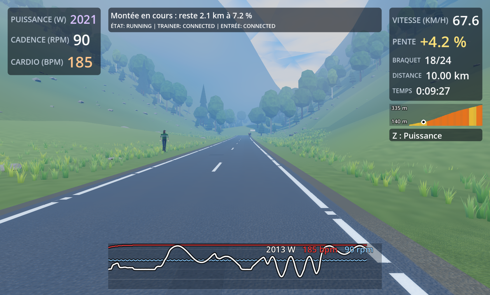 |
| alpine | — | — | 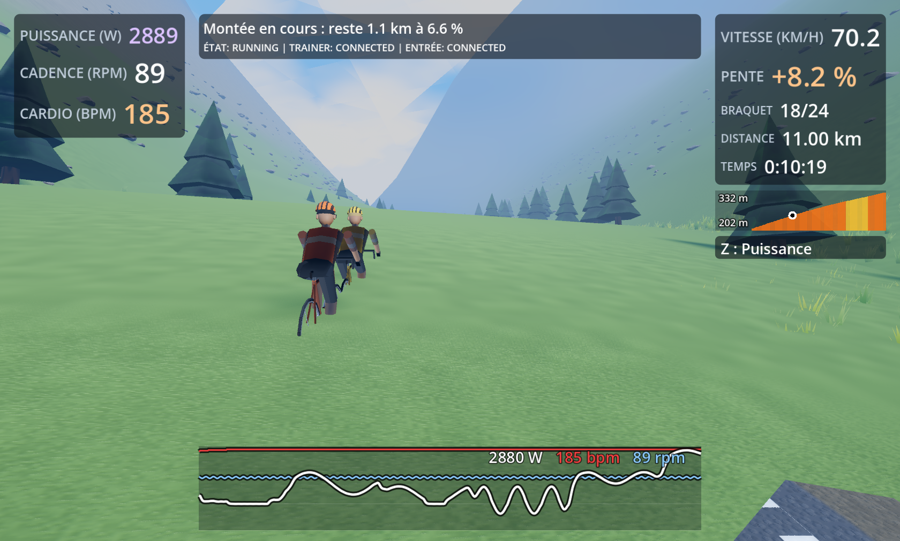 |
| cote_mer | — | — | 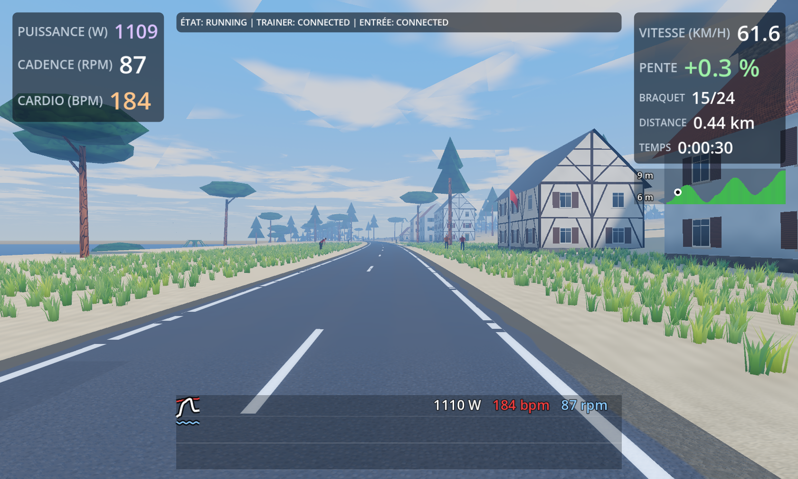 |